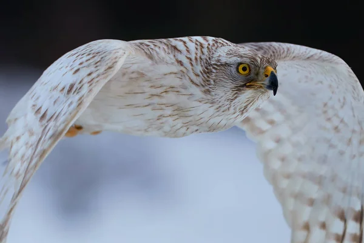

Azor común
Es una especie de ave de la familia Accipitridae. También recibe los nombres de azor septentrional, azor norteño y gavilán azor.
Su vuelo es muy rápido, fuerte y acrobático, el diseño de su cola le permite maniobrar realizando rápidos cambios de dirección entre la espesura del bosque dando así alcance con facilidad a sus presas.
Emite un sonido potente y grave “guik” que es posible escucharlo a gran distancia, sobre todo cuando sobrevuela su territorio.

El azor común es de tamaño mediano (mide entre 48 y 58 cm; bastante similar a un ratonero) y su patrón de colores le asemejan a un halcón, aunque la especie se encuentra realmente emparentada con las águilas y muy especialmente con el gavilán. Su envergadura es de entre 100 y 120 cm, y como en todas las aves rapaces, el macho es de menor tamaño que la hembra.
Es un ave especializada en la caza en ecosistemas arbóreos; sus alas resultan cortas para su tamaño, y tienen los extremos redondeados; al mismo tiempo, su cola es proporcionalmente larga, para facilitar las maniobras bruscas, y barreada con 4 o 5 franjas oscuras. Estas características le permiten una gran movilidad y capacidad de maniobra en un ambiente con mucha vegetación, y sus cortas alas impiden que choque contra la foresta del bosque de forma que es capaz de volar sin problemas en un ambiente denso. Estas características cinegéticas le dieron su valor desde la antigüedad como ave predilecta en cetrería para cazar en el bosque.
El azor común es un formidable cazador del bosque: persigue sus presas velozmente entre los árboles volando bajo con gran habilidad. Caza distintas especies de aves (cuervos, palomas, tordos, perdices, etc) y también pequeños mamíferos (conejos, liebres, ardillas, ratones, etc), así como lagartos e insectos. Acostumbra a cazar al acecho, posado en una atalaya o lugar privilegiado desde donde poder observar su territorio y localizar a sus posibles presas sin ser visto; una vez localizada, ataca siguiendo su ángulo muerto, normalmente desde abajo en el caso de un ave en vuelo, o a ras de suelo si su presa está en el suelo. Devora sus presas en el lugar donde las atrapó.
Es un ave diurna discreta y bastante difícil de ver, incluso más que su pariente de menor tamaño, el gavilán común (Accipiter nisus).
Páginas sugeridas:
Águila
Buitre
Gavilán